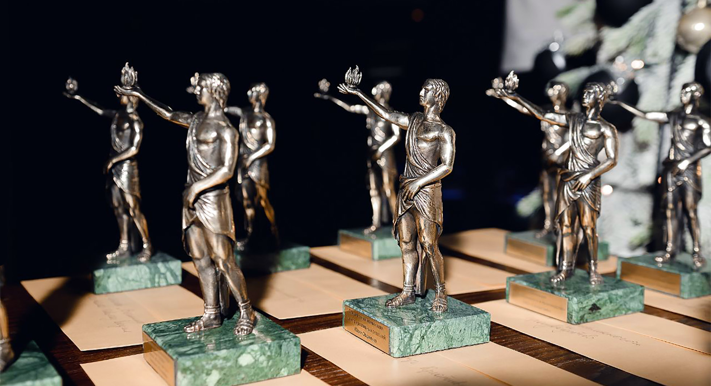
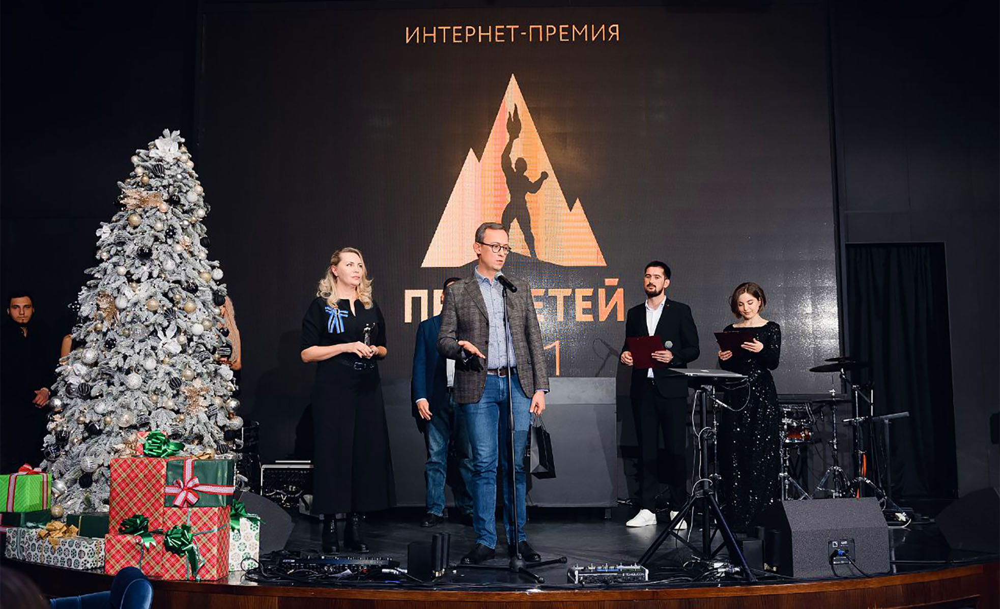

В Пятигорске наградили победителей интернет-премии «Прометей-2021»
Портал "Кавказ Сегодня стал одним из лауреатов в специальной номинации
В субботу, 4 декабря, в Пятигорске прошло торжественное награждение лауреатов Всероссийской интернет-премии «Прометей-2021». На торжественной церемонии заветные бронзовые статуэтки, изображающие легендарного героя, несущего огонь людям, были вручены победителям в 11 основных и шести специальных номинациях. Вручение премии происходило уже в 11-й раз.
Как сообщил руководитель организационного комитета интернет-премии «Прометей» Ражап Мусаев, ежегодно конкурс собирает участников не только со всей России, но и некоторых зарубежных стран. В нынешнем году «Прометей» объединил около 100 претендентов на звание лауреата престижной награды. Организатором премии является информационное агентство ТАСС.
На церемонии награждения победителей помощник полномочного представителя Президента России в СКФО Сергей Стариков отметил:
Мы рады, что премия вернулась на Кавказ.
Благодарны за постоянное внимание
и интенсивную работу премии «Прометей»
со всем нашим информационным сообществом
на Кавказе. ТАСС является для нас хорошим
информационным партнером, задает определенные стандарты
качества, которые на медиарынке Кавказа являются
эталоном
Руководитель оргкомитета интернет-премии «Прометей» Ражап Мусаев, приветствуя участников торжества, подчеркнул:
Честно говоря, в 2011 году мы не думали,
что премия будет так долго жить. Но любой проект,
как и человек, рождённый на Кавказе, славится
долголетием и крепким здоровьем.
И я надеюсь, что наша премия будет жить
и развиваться ещё десятки лет. Потому что она
вручается за пользу, за вклад в жизнь
людей — тем, кто делает эту жизнь лучше,
удобнее и комфортнее
Свои приветственные слова посвятил собравшимся также заместитель председателя правительства Ставропольского края Игорь Бабкин:
Приятно находиться среди тех, кто понимает
и ощущает значимость интернет-технологий,
интернет-коммуникаций в современном мире.
Хотел бы поблагодарить, в первую очередь,
руководство информационного агентства ТАСС, лично
директора Сергея Владимировича Михайлова и Ражапа
Мусаева — бессменного руководителя этого
проекта. Прекрасного проекта, на мой взгляд
Итак, триумфаторы. Победителем премии в номинации «СМИ» был назван телеканал «Россия-24». В номинации «Спорт, здоровый образ жизни» — Федерация гандбола России. «Наука и образование» — Северо-Кавказский институт-филиал РАНХиГС. «Экономика и бизнес» — онлайн-гипермаркет «Пархато» (Чеченская Республика).
В номинации «Общественная деятельность» победил Совет по культуре молодежного парламента при Государственной думе. «СберЗвук» стал лучшим в номинации «Развлечения, отдых, туризм», администрация главы КБР — в номинации «Власть и государство». «Промышленность и производство» — ПАО «Северсталь», «Технологии и инновации» — объединение предприятий «Европласт».
Победителем в номинации «Культура и искусство» стала кинокомпания STAR MEDIA, в номинации «Бизнес-образование» — Академия Бизнеса банка «Открытие».
Кроме того, компетентное жюри определило победителей и в специальных номинациях. Примечательно, что в одной из них — «За укрепление этноконфессионального согласия на Северном Кавказе» — победу завоевал цикл фильмов «Вершины Кавказа» информационно-аналитического портала «Кавказ Сегодня». Напомним, это большое документальное кино о людях, религиях и жизни современного кавказского мира.
15 ноября 2021 года состоялась премьера третьей серии фильма «Вершины Кавказа». За неполные три недели фильм посмотрели уже около полумиллиона зрителей. Первые две серии этого фильма вышли осенью 2020 года на YouTube-канале портала «Кавказ Сегодня» и набрали уже более 6 млн просмотров.
Статуэтки премии «Прометей-2021» в специальных номинациях также получили: Центр креативных решений Юлии Овдиенко, детская лига по дзюдо «ЛокоДзюдо», государственный музей-заповедник М. Ю. Лермонтова, хореограф Сальма Галаева, проект Миланы Урусовой «Я хочу как ты» (телеканал «Краснодар»). Поздравляем коллег-победителей!
Кстати, о жюри премии «Прометей-2021». В него вошли: генеральный директор ТАСС Сергей Михайлов, генеральный директор АСИ Светлана Чупшева, трехкратный олимпийский чемпион Бувайсар Сайтиев, депутат Государственной думы Елена Бондаренко, президент Национальной ассоциации телерадиовещателей Эдуард Сагалаев, руководитель оргкомитета премии «Прометей» Ражап Мусаев, актёр Гоша Куценко, фотограф Антон Ланге, советник руководителя Роскачества Антон Буланов, директор Высшей школы маркетинга и развития бизнеса ВШЭ Евгений Бармин, мэр Железноводска Евгений Моисеев.
Напомним, интернет-премией «Прометей» ежегодно отмечаются наиболее полезные для общества проекты. Среди них — сайты и мобильные приложения, интернет-проекты коммерческих, общественных, государственных организаций и СМИ. Основным критерием оценки является наличие реального вклада в жизнь людей.
С 2011 года участниками этой премии стали тысячи проектов и конкурсантов. Свыше 200 из них стали лауреатами.